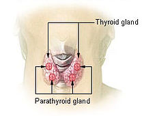

Through the hormones it produces, the thyroid gland influences almost all of the metabolic processes in your body. Thyroid disorders can range from a small, harmless goiter (enlarged gland) that needs no treatment to life-threatening cancer. The most common thyroid problems involve abnormal production of thyroid hormones. Too much thyroid hormone results in a condition known as hyperthyroidism. Insufficient hormone production leads to hypothyroidism.
All types of hyperthyroidism are due to an overproduction of thyroid hormones, but the condition can occur in several ways: